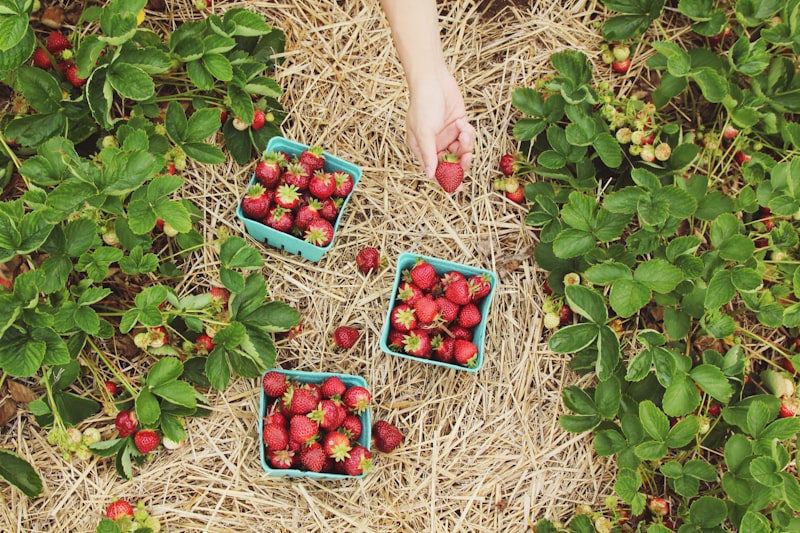
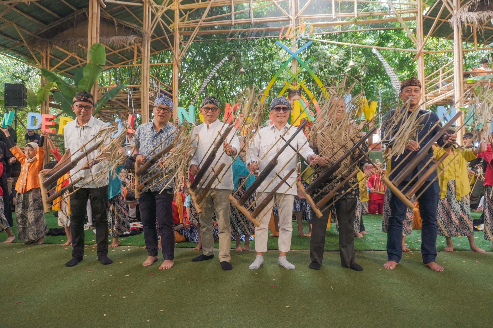
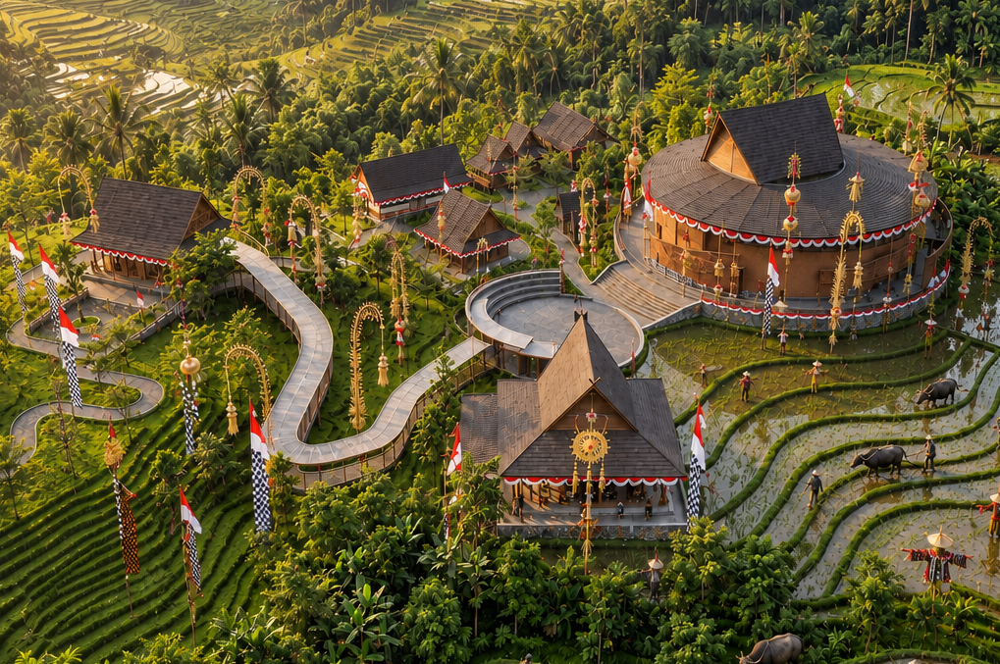

Unggulan
Agrowalk 5 Titik
Peternakan, sampah organik, bibit pepaya, arboretum bambu, dan sentra perajin dalam satu perjalanan berpemandu.
Pusat seni, tradisi, dan kebudayaan Sunda terintegrasi di Kawasan Bale Pare, Kota Baru Parahyangan — hamparan sawah, rumpun bambu, dan seni pertunjukan dalam satu perjalanan budaya yang hidup.


Lembur Udjo Parahyangan lahir dari perjalanan panjang keluarga Udjo dalam menjaga, memperkenalkan, dan mengembangkan angklung serta kebudayaan Sunda kepada dunia sejak tahun 1966.
Dirancang seperti sebuah lembur Sunda yang hidup. Hamparan sawah, rumpun bambu, seni pertunjukan, musik tradisi, permainan rakyat, hingga kelestarian alam menjadi bagian terintegrasi dalam satu perjalanan.
Dari Bale Pare, Kota Baru Parahyangan, angklung terus diperkenalkan kepada dunia lewat pertunjukan interaktif, workshop, dan pertemuan budaya yang diwariskan dari generasi ke generasi.
Empat sajian utama yang memadukan keindahan seni musik, tradisi, dan arsitektur Sunda dalam satu kesatuan perjalanan berkesan — ditambah edukasi alam yang bisa diikuti seluruh keluarga.
Momen autentik dan kehangatan tradisi Sunda yang hidup melalui rekaman visual pengunjung dan seniman kami — dari panggung Bale Karesmen sampai halaman kampung.



Dengan pertunjukan sederhana, suatu waktu angklung akan mendunia.
 Udjo Ngalagena
Abah Udjo · Saung Angklung Udjo, 1966
Udjo Ngalagena
Abah Udjo · Saung Angklung Udjo, 1966
Kunjungan tidak berhenti di panggung. Seluruh kawasan diajak belajar tentang keberlanjutan: air, bambu, tanah, dan kehidupan warga yang tumbuh bersama alam Bale Pare.

Peternakan, sampah organik, bibit pepaya, arboretum bambu, dan sentra perajin dalam satu perjalanan berpemandu.
Pelestarian rumpun bambu sebagai sumber utama seni angklung dan seluruh musik bambu Sunda.
Sarana belajar mengenal kehidupan agraris secara langsung, dari kandang hingga hasilnya — dikunjungi sepanjang jalur Agrowalk.
08.00 – 14.00 WIB · Selasa – MingguSawah, kebun bambu, dan kolam yang menjaga keseimbangan kawasan tetap hijau dan sejuk.
Sebelum gawai dan layar, anak-anak lembur mengisi sore dengan permainan yang mengajarkan strategi, kerja sama, dan keberanian — dimainkan di halaman, sawah, dan lapangan kampung.
Ikuti jadwal pertunjukan angklung interaktif, tradisi helaran, dan agrowalk budaya Sunda setiap hari. Rombongan sekolah dan komunitas dapat diatur terlebih dahulu.
Sesi interaktif di Bale Karesmen, termasuk permainan angklung bersama penonton.
Arak-arakan tradisi dengan iringan angklung dan tarian tradisional Sunda.
Perjalanan berpandu ke 5 titik edukasi: peternakan, sampah organik, bibit pepaya, arboretum bambu, sentra perajin.
Informasi lokasi, jadwal pertunjukan, dan cara reservasi sebelum berkunjung ke Lembur Udjo Parahyangan.